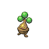

📖 英語版の図鑑説明
Its tears elicit sympathy from those who see them, but do not be deceived! This expulsion of body water is merely a physiological mechanism for keeping itself in good health.
日本語訳
涙は同情を誘うが、体内の水分調整のための生理現象にすぎません。
📝 この図鑑文に出てくる英単語
| 英単語 | 意味 | 品詞 | レベル |
|---|---|---|---|
| tears | 涙(複数形) | 名詞 | 中3 |
| elicit | 引き出す | 動詞 | 大学 |
| sympathy | 同情 | 名詞 | 大学 |
| deceived | だまされた | 動詞 | 大学 |
| expulsion | 追い出すこと | 名詞 | 大学 |
| merely | ただ〜だけ | 副詞 | 大学 |
| physiological | 生理的な | 形容詞 | 大学 |
| mechanism | しくみ | 名詞 | 大学 |
文法ポイント for keeping は前置詞のあとに動詞のing形(動名詞)が続く形で、「〜することに対して」という意味です。
who は関係代名詞で、直前の名詞をくわしく説明するまとまりを作っています。人や生き物について説明するときに使います。
💡 英語名「Bonsly」の由来
英語名「Bonsly」は、bonsai（盆栽）、sly（ずるい）とlie（うそ）を組み合わせた名前と考えられている。フランス語の名前は「Manzaï」で、mini（小さい）、bonsaï（盆栽）、banzaï（日本のかけ声）から作られている。
出典 Bulbapedia
📊 ウソハチの種族値
HP50
こうげき80
ぼうぎょ95
とくこう10
とくぼう45
すばやさ10
合計 290
❓ よくある質問
- ウソハチの英語名は？
- ウソハチの英語名は「Bonsly」です。
- ウソハチの英語名「Bonsly」の由来は？
- 英語名「Bonsly」は、bonsai（盆栽）、sly（ずるい）とlie（うそ）を組み合わせた名前と考えられている。フランス語の名前は「Manzaï」で、mini（小さい）、bonsaï（盆栽）、banzaï（日本のかけ声）から作られている。
- ウソハチは英語版の図鑑でどう説明されている？
- 「Its tears elicit sympathy from those who see them, but do not be deceived! This expulsion of body water is merely a physiological mechanism for keeping itself in good health.」と書かれています。日本語にすると「涙は同情を誘うが、体内の水分調整のための生理現象にすぎません。」という意味です。
ウソハチは第4世代（シンオウ地方）のポケモンです。第4世代（シンオウ地方）の英語名一覧 →